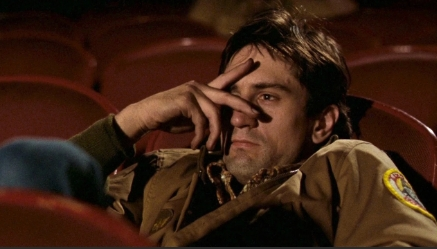
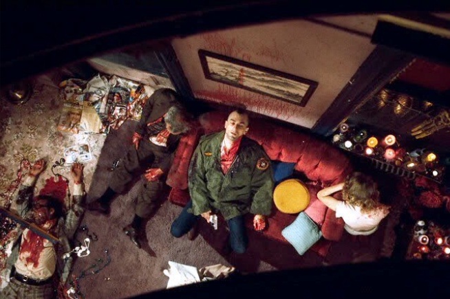
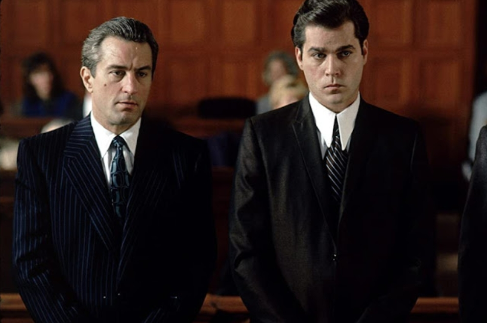
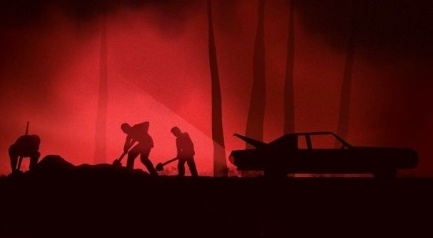
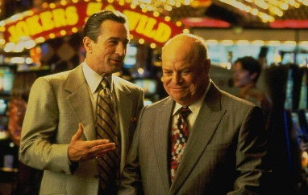
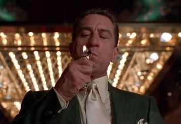

Introduction to the Works
Martin Scorsese's filmography spans over five decades, covering genres from historical epics to psychological thrillers. However, he is most renowned for his explorations of the American underworld and the isolation of the human soul. This page focuses on three pivotal works (that are also my personal favourites!) that define his career.
Taxi Driver (1976)

Background
Released in 1976, Taxi Driver is a psychological drama that explores the themes of alienation and urban decay in post-Vietnam War New York City. The film follows Travis Bickle, a lonely and insomniac veteran who takes a job as a nighttime taxi driver to cope with his chronic detachment from society. Written by Paul Schrader and directed by Scorsese, the project was influenced by the "French New Wave" aesthetic .
The film is known for its gritty, low-budget production style, which used real New York locations to capture the authentic, derelict atmosphere of the 1970s. Despite its controversial depiction of violence, Taxi Driver was a critical success, winning the Palme d'Or at the Cannes Film Festival and receiving four Academy Award nominations. It remains a definitive study of social isolation and is often quoted as one of the most significant works of the New Hollywood era.
"You talkin' to me? You talkin' to me? Then who the hell else are you talkin' to? You talkin' to me? Well, I'm the only one here." - Travis Bickle

The Visual Impact
The "God's Eye View" overhead shot at the end of Taxi Driver is one of the most famous moments in movie history. After the violent shootout, the camera floats slowly above the hallway, looking straight down at the aftermath. By placing the camera so high up, Scorsese moves the audience away from the action and makes us look at the scene like a silent, outside observer. This perspective takes away the "excitement" of the fight and replaces it with a cold, sad look at the mess Travis Bickle has made. It feels as if a higher power is judging the scene, showing that while the main character survived, the event was a total disaster.
Goodfellas (1990)

Background
Goodfellas is a 1990 biographical crime film based on the non-fiction book Wiseguy by Nicholas Pileggi. The narrative chronicles the rise and fall of Henry Hill, a mob associate who spent three decades within the Lucchese crime family. Unlike previous cinematic depictions of organized crime that leaned toward theatrical tragedy, Scorsese opted for a fast-paced, documentary-like realism.
The production is famous for its innovative use of voiceover narration and rapid-fire editing, which were intended to mimic the high-energy, chaotic lifestyle of its protagonists. Scorsese and Pileggi collaborated closely on the screenplay to ensure the dialogue captured the specific vernacular of the Italian-American underworld. Upon release, the film was praised for its technical expertise and is now widely considered one of the greatest films in the gangster genre, earning six Academy Award nominations and winning Best Supporting Actor for Joe Pesci.
"As far back as I can remember, I always wanted to be a gangster." - Henry Hill

The Visual Impact
In this iconic sequence from Goodfellas, Scorsese strips away the glamour of the mob life, replacing it with a grim and hellish silhouette. By casting the three men and their car in pitch black against a stark, red-washed background, the camera emphasizes the primal and anonymous nature of their act. The image isolates the essential action: three figures in a labouring silhouette, digging a shallow grave in the woods, with the faint shape of the vehicle and a thin beam of light grounding the scene. This minimal, high-contrast composition provides a detached yet terrifying perspective on their moral descent. The harsh, blood-red atmosphere serves as a visceral metaphor, trapping the viewer in a nightmarish moment and forcing them to confront the brutal reality of their violence
Casino (1995)

Background
Released in 1995, Casino serves as a thematic companion to Goodfellas, where Scorsese collaborated with writer Nicholas Pileggi and actors Robert De Niro and Joe Pesci again. The film is based on the real-life story of Frank "Lefty" Rosenthal, who oversaw the Stardust, Fremont, and Hacienda casinos in Las Vegas for the Chicago Outfit during the 1970s and 80s.
The narrative explores the transition of Las Vegas from a mob-controlled "frontier" to a sanitized, corporate-run tourist destination. Produced on a significantly larger scale than Scorsese's previous crime dramas, Casino utilized over 7,000 extras and was filmed on location at the Riviera Hotel and Casino to maintain historical accuracy. The film is noted for its extravagant costume design and its exploration of how greed and internal betrayal led to the collapse of the mob's influence in Nevada. It received critical acclaim, particularly for Sharon Stone's Golden Globe-winning performance.
"In the Vegas valley, they get rid of their problems in the holes in the desert." - Nicky Santoro

The Visual Impact
In this iconic opening shot, Scorsese uses a combination of slow motion and vibrant, saturated colors to establish the "glittering trap" of 1970s Las Vegas. As Ace lights his cigarette, the massive neon signs of the Tangiers glow behind him in intense shades of gold, pink, and red. This lighting choice is intentional; it makes the casino look like a palace of dreams, but the "fiery" colors also hint at the destruction and explosions that occur later in the story. By filming this moment in slow motion, Scorsese forces the audience to focus on Ace's expensive suit and calm expression, showing a man who believes he is at the peak of his power. This shot perfectly captures the theme of "surface glamour", everything looks beautiful and expensive, even though the world Ace built is about to be destroyed.